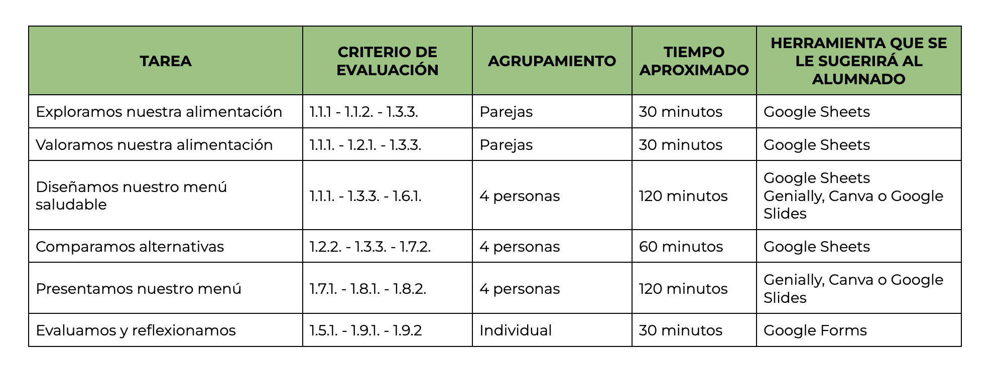
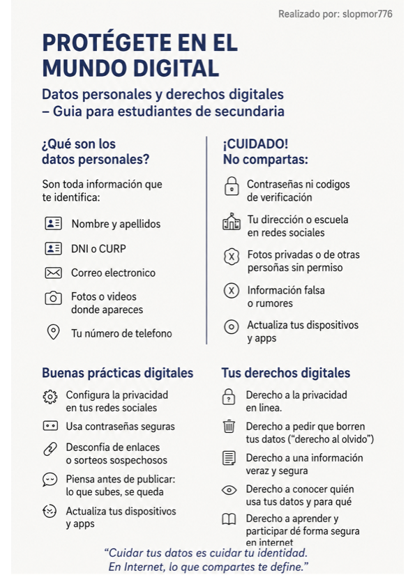

1. Descripción general de este recurso
Título descriptivo: “Somos lo que comemos”
Centro de interés o temática: Hábitos saludables. Proyecto donde se utilizarán conceptos matemáticos para ayudar a mejorar los hábitos alimenticios de las personas de nuestro entorno.
Nivel al que va dirigido: 1º ESO.
Temporalización aproximada: El proyecto se llevará a cabo durante 5 sesiones, 4 de ellas se realizarán en el aula del grupo y otra sesión será en el exterior del centro.
Materia o materias implicadas: Matemáticas
Idioma: Español
Descripción general de lo que se pretende que el alumnado aprenda o trabaje:
Los contenidos matemáticos que se pretenden trabajar durante el proyecto son:
- Cantidad: interpretación de números.
Sentido de las operaciones: reconocimiento y aplicación de las operaciones con números decimales.
Relaciones: comprensión y representación de cantidades con números decimales. - El proyecto pretende que los alumnos utilicen estos conocimientos matemáticos para dar respuesta a una problemática real, en este caso mejorar la alimentación de personas de nuestro entorno.
La metodología utilizada en este proyecto será:
- Aprendizaje basado en problemas de la vida cotidiana.
- Aprendizaje cooperativo durante el desarrollo del trabajo por parte del alumnado.
- Aula invertida donde el alumnado aprenderá por sí mismo los conceptos matemáticos con el apoyo del profesor.
Justificación:
El proyecto se plantea en la asignatura de Matemáticas de 1º ESO, dentro de la unidad sobre números decimales, fracciones y porcentajes. Su finalidad es que el alumnado aplique los conocimientos matemáticos a una situación real, planificando un presupuesto y elaborando un menú saludable destinado a mejorar la alimentación de una persona de su entorno.
La elección de este proyecto surge tras reflexionar sobre experiencias previas con tecnologías educativas, donde se evidenció la necesidad de fortalecer la competencia digital y la autonomía del alumnado. Por ello, la propuesta integra de forma guiada el uso de herramientas digitales (hojas de cálculo o presentaciones).
El enfoque metodológico se basa en el Aprendizaje Basado en Proyectos (ABP). Los alumnos trabajarán en grupos para buscar precios reales, realizar cálculos con números decimales y porcentajes, diseñar un menú equilibrado y presentar sus resultados en formato digital. De este modo, se desarrollan tanto las competencias matemáticas y digitales como las personales y sociales, fomentando la colaboración, la responsabilidad y la toma de decisiones.
La evaluación será competencial y continua, considerando el proceso (autonomía, resolución de problemas técnicos y trabajo en equipo) y el producto final (precisión de cálculos y coherencia del menú).
En resumen, este proyecto convierte el aprendizaje matemático en una experiencia práctica, significativa y contextualizada, aprovechando los avances logrados en el uso pedagógico de la tecnología y promoviendo hábitos saludables.
2. Referencia a las competencias clave
A continuación se incluyen los descriptores de las competencias clave estipuladas por la normativa trabajadas en este recurso.
| COMPETENCIAS CLAVES | CLAVE DE LOS DESCRIPTORES |
|---|---|
| Competencia en comunicación lingüística (CCL) | CCL1, CCL2, CCL3 |
| Competencia plurilingüe (CP) | |
| Competencia matemática y en ciencia, tecnología e ingeniería (STEM) | STEM1, STEM2, STEM5 |
| Competencia personal, social y de aprender a aprender (CPSAA) | CPSAA1, CPSAA3 |
| Competencia ciudadana (CC) | CC1, CC3 |
| Competencia emprendedora (CE) | CE3 |
| Competencia en conciencia y expresión culturales (CCEC) |
Y en referencia a los marcos de elaboración propia de las siguientes competencias clave:
| COMPETENCIAS CLAVES | DESCRIPTORES |
|---|---|
| Competencia digital |
1.2.1 Analizar, comparar y evaluar de forma crítica la fiabilidad y seriedad de recursos de datos, información y contenido digital. Analizar, interpretar y evaluar de forma crítica datos, informaciones y contenidos digitales. 2.2.1 Compartir datos, información y contenidos digitales con otros a través de la tecnologías adecuadas. Hacer de intermediario y ser capaz de referenciar la información compartida. |
3. Criterios de evaluación de las competencias específicas
A continuación se incluye la relación de los criterios de evaluación de las competencias específicas evaluadas en este recurso.

Nota: Los criterios 1.10.1 y 1.10.2 están asociados con todas las tareas excepto la última, por ser criterios relacionados fundamentalmente con el trabajo en equipo.
4. Saberes básicos de referencia en este recurso
A continuación de detalla la relación de saberes básicos que han servido de referencia para plantear la tarea de este recurso.
| Nombre del bloque | Nombre del apartado | Saber básico |
|---|---|---|
| Sentido numérico | 2. Cantidad | Interpretación de números grandes y pequeños, reconocimiento y utilización de la notación exponencial, científica y de la calculadora. |
| 3. Sentido de las operaciones |
Reconocimiento y aplicación de las operaciones con números enteros, racionales o decimales útiles para resolver situaciones contextualizadas. |
|
| 4. Relaciones | Números enteros, fracciones, decimales y raíces: comprensión y representación de cantidades con ellos. | |
| Sentido socioemocional | 1. Creencias, actitudes y emociones | Fomento de la curiosidad, la iniciativa, la perseverancia y la resiliencia hacia el aprendizaje de las matemáticas. |
| 2. Trabajo en equipo y toma de decisiones | Selección de técnicas cooperativas para optimizar el trabajo en equipo. | |
| 3. Inclusión, respeto y diversidad | Reconocimiento de la contribución de las matemáticas al desarrollo de los distintos ámbitos del conocimiento humano desde una perspectiva de género. |
5. Herramientas para la realización del proyecto
En el siguiente enlace podéis encontrar una recopilación de las herramientas que se utilizarán durante la realización de este proyecto:
6. Línea temporal para la realización del proyecto
En el siguiente enlace podéis consultar la línea temporal de realización del proyecto, así como enlaces de interés para cada una de las tareas:
7. Descripción del producto final
Producto final: “Diseñamos un menú saludable” (1.º ESO)
Herramientas seleccionadas:
- Google Sheets (para los cálculos matemáticos con números decimales).
- Canva (para el diseño visual y presentación del menú saludable).
Objetivo del uso de las herramientas
El objetivo principal es que el alumnado aplique los conocimientos sobre números decimales y operaciones básicas a una situación práctica y cercana, como es la elaboración de un menú saludable. Mediante estas herramientas, los estudiantes podrán:
- Realizar cálculos de precios, cantidades y valores nutricionales.
- Organizar y representar datos en tablas o gráficos.
- Diseñar un menú atractivo y visualmente claro, desarrollando la creatividad y la competencia digital.
Justificación de la elección
1. Google Sheets
Versatilidad: Permite trabajar con operaciones de suma, multiplicación o porcentajes usando números decimales, lo que se ajusta al contenido del proyecto.
Accesibilidad: Es una herramienta gratuita y disponible online, compatible con los dispositivos del centro y accesible desde casa.
Adecuación al alumnado de 1.º ESO: Su manejo es sencillo e intuitivo. Favorece la autonomía y la aplicación práctica de los conceptos matemáticos.
Competencias trabajadas:
Competencia matemática y científica: aplicar los números decimales en contextos reales.
Competencia digital: uso responsable y eficaz de una hoja de cálculo para resolver problemas reales.
2. Canva
Versatilidad: Permite crear fácilmente diseños atractivos, como menús, carteles o infografías, integrando imágenes, colores y texto.
Accesibilidad: Cuenta con versión gratuita y educativa, y puede usarse directamente desde el navegador sin instalación.
Adecuación a la edad: Su interfaz visual es intuitiva y fomenta la motivación y la creatividad del alumnado de 1.º ESO.
Competencias trabajadas:
Competencia digital: uso de herramientas en línea para la creación de materiales visuales.
Competencia en comunicación lingüística y sentido de la iniciativa: elaborar y presentar un producto final coherente y atractivo.
Competencia personal y social: trabajo cooperativo y organización del proyecto.
Conclusión
El uso combinado de Google Sheets y Canva permite integrar los aprendizajes matemáticos (operaciones con decimales, organización de datos y razonamiento numérico) con el diseño creativo y la comunicación visual, reforzando así distintas competencias clave del alumnado de 1.º ESO:
- Competencia matemática y en ciencia, tecnología e ingeniería (STEM)
- Competencia digital
- Competencia en comunicación lingüística
- Competencia personal, social y de aprender a aprender
De esta forma, el alumnado no solo comprende mejor el uso de los números decimales, sino que entiende su aplicación en la vida cotidiana y desarrolla habilidades digitales y creativas a través de un proyecto significativo.
8. Instrumentos de evaluación
En el siguiente enlace podéis consultar los instrumentos de evaluación que se utilizaran en el desarrollo del proyecto.
9. Protección de datos personales y garantías de derechos digitales
